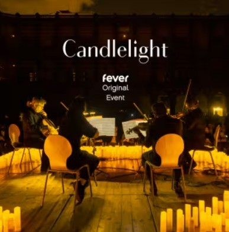

Кино
Рекомендуем ленту "Одна жизнь" британского режиссера Джеймса Хоуза
Это история британского брокера Николаса Уинтона, который во время Второй мировой войны, помог вывезти из Чехословакии еврейских детей, обреченных на смерть. О его подвиге стало известно десятилетия спустя, когда его жена нашла его записную книжку 1939 года с адресами английских семей, принявших спасённых детей. Сам Уинтон никогда не рассказывал об этом.
В ролях: Энтони Хопкинс, Хелена Бонем Картер, Джонни Флинн
Концерт
Рекомендуем концерт при свечах
В эту пятницу можно будет усшлышать музыку немецкого кинокомпозитора Ганса Циммера. Он известен своими меллодиями к фильмам и компьютерным играм. Будет звучать музыка из фильмов "Пираты Карибского моря", "Шерлок Холмс", "Король-Лев", "Бэтмен" и другие.
Концерт состоится в пятницу, 12 апреля в 22.30 Kulturkirche Altona
Выставка
Рекомендумем посетить иммерсивную выставку "Туттанхомон"
Некоторые ругают, потому что дорого и почти нет оригинальных артифектов. Три небольшие локации, но зато возможность побродить по пустыне времен строительства пирамид и Египты времен больших открытий в виртупальных очках. Это прикольно. И пару оригинальных экспанатов все-таки есть. Плюс есть возможность (для детей) узнать и интересных фактов.